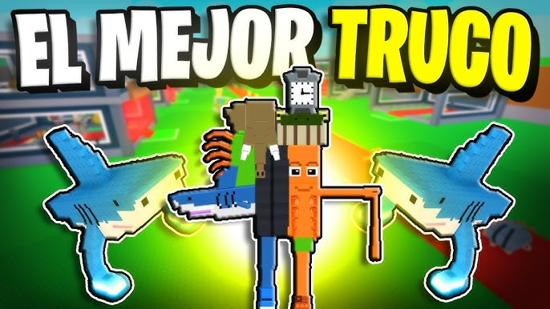

MEJORES TRUCOS EN STEAL A BRAINROT
Descubre los secretos más efectivos para ganar partidas en Steal a Brainrot ü߆üî•

Steal a Brainrot es uno de los juegos más virales en Roblox, donde el caos, los memes y la rapidez marcan la diferencia. Aqu√≠ te mostraremos los mejores trucos para dominar las partidas y divertirte al máximo en 2025 üöÄ.
üí° Trucos básicos para principiantes
- üëÄ Observa a los jugadores experimentados: mira c√≥mo se mueven y qu√© estrategias aplican.
- ⚡ Mueve tu avatar rápidamente para evitar que otros te atrapen desprevenido.
- üé§ Usa el chat de voz o de texto para distraer y confundir a tus oponentes.
- üîÑ Practica en distintas partidas para mejorar tu reacci√≥n y coordinaci√≥n.
üéØ Estrategias avanzadas para ganar siempre
- Planea rutas de escape cuando estés rodeado.
- Aprende a camuflarte entre los demás jugadores para pasar desapercibido.
- Únete con amigos y hagan estrategias en equipo.
- Usa objetos del mapa a tu favor para bloquear o distraer.
⚠️ Errores comunes que debes evitar
Muchos jugadores caen en estas trampas:
- No planear y correr sin dirección.
- Confiarse demasiado cuando están ganando.
- Ignorar a los jugadores que aparentan ser inofensivos.
üöÄ Gu√≠a rápida para convertirte en un experto
- Entra en partidas públicas y analiza el comportamiento de los demás.
- Domina el timing de tus movimientos.
- Usa distracciones como el chat para ganar ventaja.
- Evita los errores comunes y mantén siempre un plan de respaldo.
- ¬°Divi√©rtete creando jugadas inesperadas que sorprendan a todos! üéâ